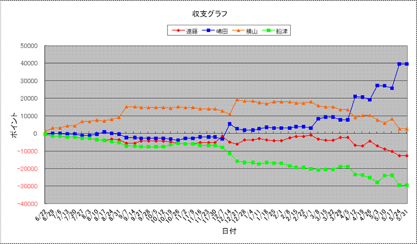

| 順位 | 馬主 | 今年度収支 | 今年度ﾎﾟｲﾝﾄ | 1頭当ﾎﾟｲﾝﾄ | 1走当ﾎﾟｲﾝﾄ | 勝率 | 連対率 | 複勝率 | ﾃﾞﾋﾞｭｰ頭数 | 勝馬頭数 | 出走回数 | 1着 | 2着 | 3着 | 4着 | 5着 | 着外 |
|---|---|---|---|---|---|---|---|---|---|---|---|---|---|---|---|---|---|
| 1 | 嶋田 | 39500 | 22100 | 1578.6 | 283.3 | 20.51% | 37.18% | 50.00% | 14 | 9 | 78 | 16 | 13 | 10 | 8 | 7 | 24 |
| 2 | 横山 | 2700 | 12900 | 921.4 | 137.2 | 20.21% | 38.30% | 53.19% | 14 | 10 | 94 | 19 | 17 | 14 | 8 | 3 | 33 |
| 3 | 遠藤 | -12700 | 9050 | 646.4 | 125.7 | 23.61% | 33.33% | 44.44% | 14 | 11 | 72 | 17 | 7 | 8 | 9 | 7 | 24 |
| 4 | 船津 | -29500 | 4850 | 373.1 | 77.0 | 12.70% | 25.40% | 31.75% | 13 | 6 | 63 | 8 | 8 | 4 | 2 | 7 | 34 |
